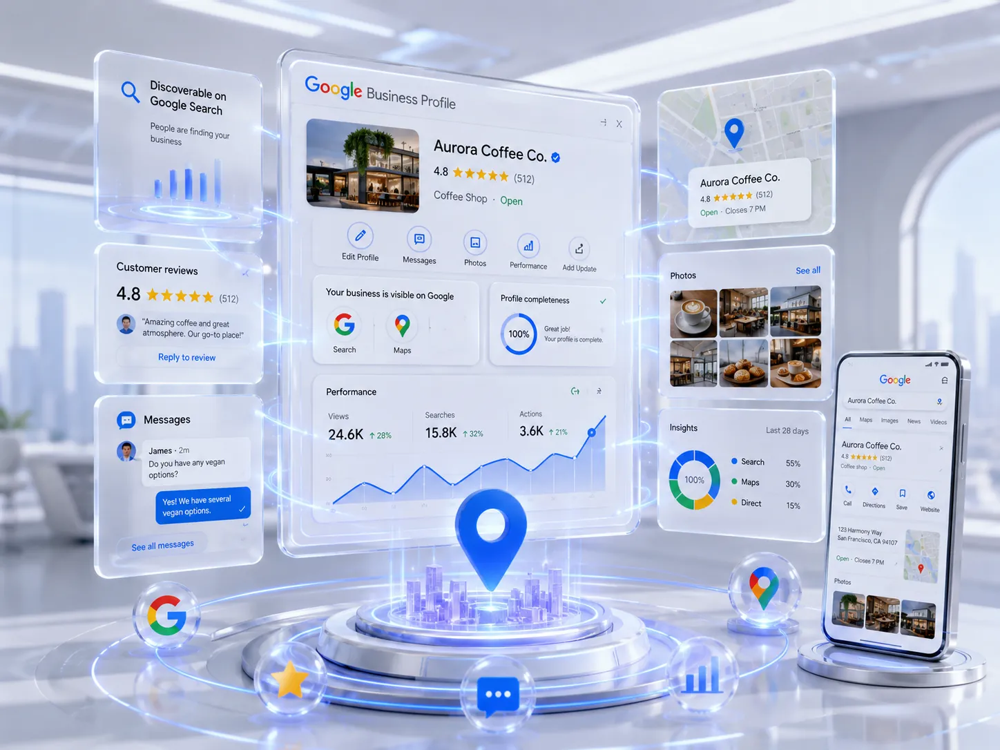
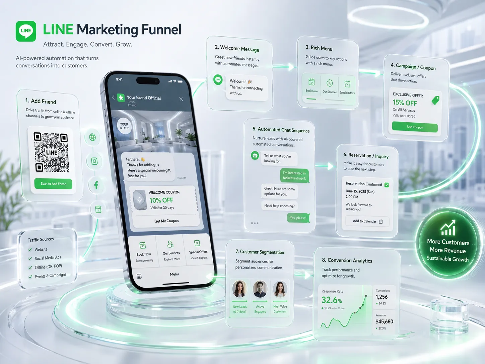
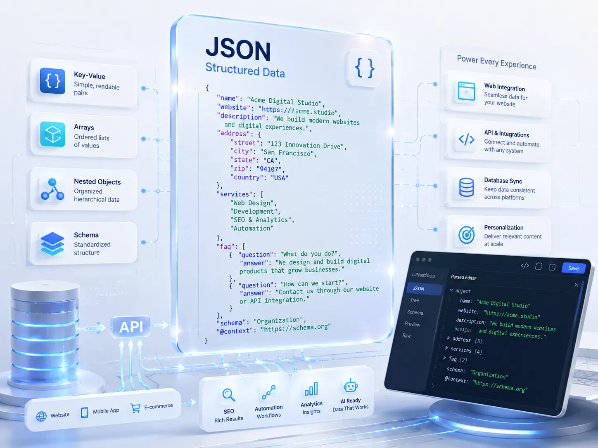

QUICK ANSWER
オプションだけ単体で頼める？何ができる？
はい、LUMENのオプションは既存サイトへの単体追加が可能です。Googleビジネスプロフィール（GBP）最適化・AI検索対策（GEO）・公式LINE構築などを、HP制作なしでも個別に依頼できます。料金は買い切り¥20,000〜／月額運用¥10,000〜（すべて税別）から、まずは無料相談で必要な範囲だけご案内します。

01 — GBP OPTIMIZATION
Google Business Profile
最適化（＝MEO対策）
Googleマップ・地域検索で「近くのお店」として見つけてもらう。NAP情報の統一・カテゴリ・説明文・写真まで徹底最適化します。「MEO対策」と呼ばれる施策の実体は、このGBP最適化そのものです。HP制作と組み合わせることで検索→来店・問い合わせの流れが完成します。
- 基本情報・NAP統一（店舗名・住所・電話）
- 業種別カテゴリ最適化
- SEO最適化済み説明文（約750文字）
- サービス・商品・写真登録
- 月1投稿・口コミ返信案（運用サポート）

02 — LINE OFFICIAL
公式LINE構築
集客導線設計
「電話は苦手・メールは面倒」な現代のユーザーに、LINEで簡単に問い合わせ・予約できる導線を作ります。友達追加から成約まで自動化する仕組みを構築します。
- ✓ アカウント設定
- ✓ プロフィール最適化
- ✓ あいさつメッセージ
- ✓ リッチメニュー作成
- ✓ 基本導線設定
- ✓ Basic全て含む
- ✓ 予約導線シナリオ
- ✓ ステップ配信設定
- ✓ 自動応答設計
- ✓ HPとの連携
- ✓ 離脱防止設計

03 — GEO OPTIMIZATION
AI検索対策
GEO初期診断・GEOまとめ
ChatGPT・Gemini・Perplexityに「この辺の◯◯」と聞かれたとき、自社が答えに出てくるかを診断し、出てくるように育てていく施策です。まずは無料の初期診断で現在地を確認できます。
- GEO初期診断：ChatGPT・Gemini・Perplexityでの見え方、技術・エンティティ診断
- GEOまとめ：新規記事＋リライトを同月に実施
- GEOまとめ：第三者サイテーション登録
GEO初期診断は単発無料。HP・GBPとのセットプランをご契約の場合も無料で実施します。
GEO初期診断を申し込む →OTHER
その他のオプション
| サービス | 料金（税別） | 備考 |
|---|---|---|
| レスポンシブ対応のみ（HP） | ¥20,000〜50,000 | 既存サイト改修・ページ数による |
FAQ
オプションに関するよくある質問。
はい、既存サイトをお持ちの方向けにGBP最適化・LINE構築・AI検索対策（GEO）を単体でご提供しています。まずはご相談ください。
業種・競合状況によりますが、カテゴリ・写真・Q&A・口コミ返信を適切に整備することでGoogleマップの表示順位改善・クリック数向上が期待できます。AI検索（Googleローカル回答）への対応にも有効です。
MEOは「Googleマップで見つけてもらう」という目的の呼び方で、GBP（Google Business Profile）最適化はその目的を達成するための実際の作業です。実務上、GBP最適化＝MEO対策とお考えいただいて問題ありません。
友だち追加時の自動返信・メニュー設定・問い合わせフォーム連携・リッチメニューの設計・実装まで対応します。予約受付・リマインド配信・顧客対応の効率化に活用できます。